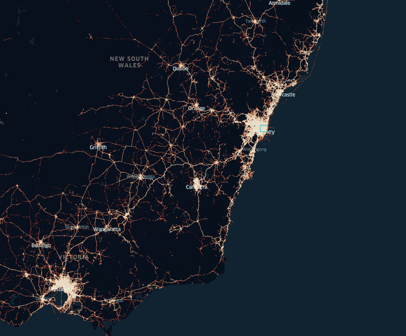
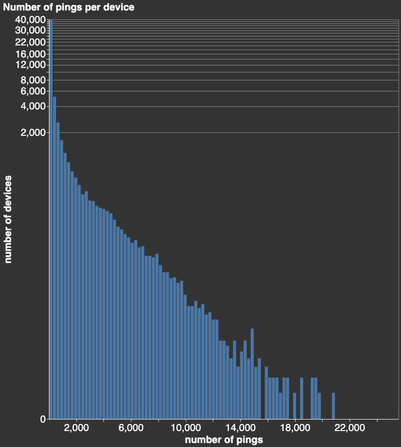
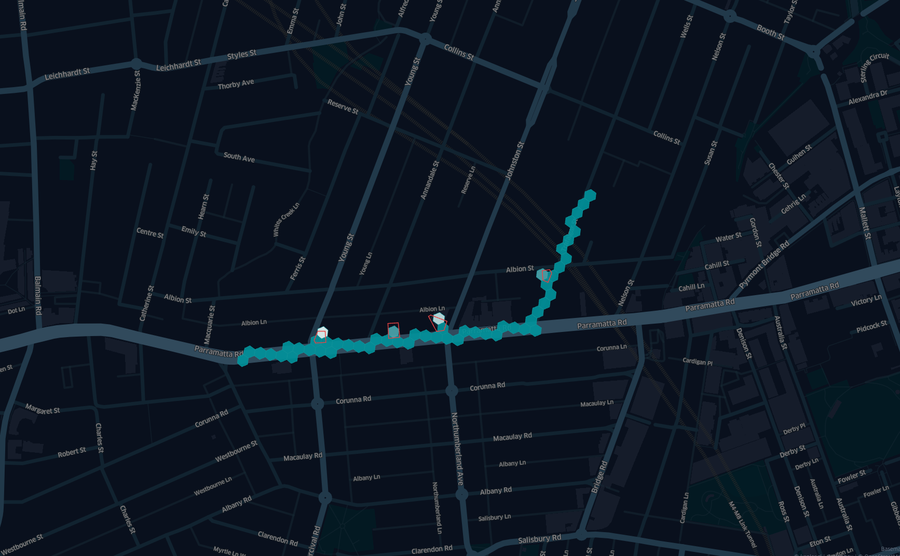
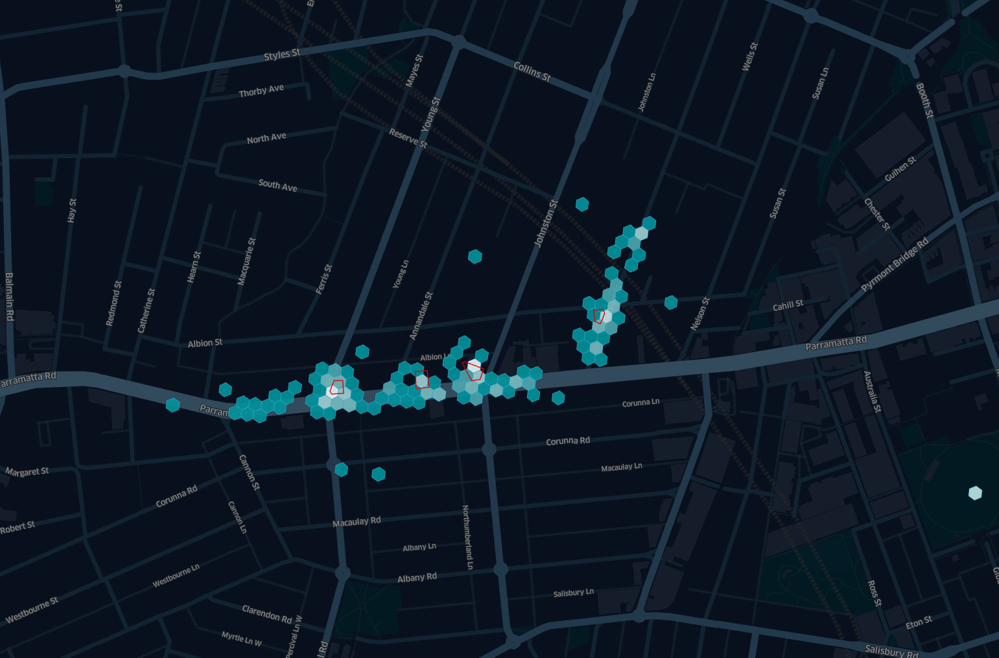

Ownership Note: blog post originally published on the 4th of August 2023 for generalsystem.com. As the General System startup adventure is coming to an end, and the website may no longer be maintained, I keep it live on my personal blog.
Special thanks to the generalsystem.com team members, in particular Lisa Hutt and Nysa Wilson for the revision and support. Typos and mistakes are on the author.
Aims
Gaining precise location intelligence and spatial data science insight for single devices is challenging and generally unreliable. For users working with a small group of entities using mobility data, there is a also strong possibility of false positives affecting the analysis. This article covers the challenges of working with mobility data and specifically, the topic of large dataset skewness, and how noisiness affects the signals’ aggregates.
This post introduces a series of applications where population studies on mobility data are beneficial and concludes with methods of obtaining valuable information from mobility data at population level regardless of skewness and noise.
Pythonic readers can reproduce the results of the first part of the article using a personal dataset and recreate all the results obtained with synthetic data. The code is open sourced and can be found at this github repository link.
Mobility Data Challenges
Originally collected for programmatic digital advertising, mobility data (also known as AdTech data), has increased its coverage and availability to the point that it has become a straightforward choice for understanding populations and consumers behavior.
There are many use cases and benefits of studying these data sets:
Planners reviewing where to build the next public electric car charge point can analyze the habitual paths of electric cars and study their dwell patterns. Fuel and electricity distribution across the grid and associated supply chains can be optimized by understanding driver behavior. Facilities such as heating, cooling and running water in public buildings can become more efficient by studying the number of people in the building across working hours. City planners can improve liveability, sustainability, the environment and create natural disaster evacuation strategies by studying the daily patterns of their citizens. Tourists and hospitality operators can leverage mobility data to calculate the number of tourists visiting cities at different times of the year, their geographical provenance, and their preferred points of interest.
Despite the importance of having reliable tools to answer these questions, it is not straightforward to gain valuable information from mobility data. The first obstacle is the data skewness: signal timestamps have irregular sampling rate and cover an uneven range across entities. The second problem is the data noise: the geolocation of a device has inconsistent precision, and the coordinates provided do not always represent the actual location of the entity. Moreover there is an inherent selection bias, as the signal only comes from certain segments of the population strata and it is not representative of the whole.
Even though signals can be modeled with trajectories, the trajectory segmentation methods from the literature, that typically apply to GPS signals, find no direct application. Due to noise and skewness, we can not assume that different signal aggregates behave in the same way.
Skewness in Mobility Data
The signals per device across a typical mobility data set are severely imbalanced. The signal sampling rate also covers uneven time intervals with irregular cadence. To provide an overview of these phenomena, a real-world mobility data set with 22 billion records covering Australia is used.
This is a sample data set of signals that were recorded in Sydney over one month. It consists of 63,562 entities and a total of 37,689,545 records, with an average of 592.95 records per device.
Let’s see how the data looks on a map, after some H3 aggregation:

And let’s see the distribution of signals (pings) per device:

In the chart above, with the Y-axis in log scale, we can see a very typical Pareto distribution. 40,000 devices (out of 63,562, which is 62%) have less than 260 pings, which is half of the average. The next 5,150 devices have between 260 and 518 pings. 2,596 devices have between 518 and 777 pings. Each time we increase the pings interval by 250, we get half of the number of devices, all the way down to only one trajectory with more than 20,673 pings.
This distribution presents challenges to anyone trying to model this data, quashing the idea of being able to track any entity from a dataset with the same sampling rate across time. What about the accuracy?
Noise: Classification and Modeling
In mobility data, spatiotemporal location can be derived from any combination of GPS signal, cellular and WiFi network, depending on how the device is connected. The latitude/longitude accuracy is affected by a number of factors related to the physical devices acquiring the signals, that are in general not known upfront (see for example [1] for GPS accuracy limitations). The sampling rate is also affected by other factors, such as privacy protocols. Other than the numerical precision of the timestamp, that can be rounded down to seconds, also the numerical precision can be affected by a lossy compression protocol, truncating floats or assigning a location linked to the associated IPv-4.
In addition to skewness across entities, there is the problem of modeling the noisiness in the data. We observed recurring noise patterns and we classified them in eight different categories.
1. Spatial stationary radial noise
The readouts appear within reach of the trajectory, though not exactly where the entity is located. This noise is radial in nature and influenced by open spaces and proximity of tall buildings, where the signal reflected from a skyscraper is interpreted as the line of sight.
Model: Gaussian, symmetric uniform, or Gumbel distribution to model presence of tall buildings.
2. Temporal stationary radial noise
To model the discrepancy between the real position and the signal in time other than in space, the second type of noise applies to the temporal coordinates. Centered at zero, it can be modeled with a range of distributions spreading the signal away from the time the event happened.
Model: Uniform, Gaussian or Gumbel with a threshold. To each tract of the trajectory, we can assign a different distribution and parameters.
Note: As the temporal precision is set to one second, after adding noise, we can have points with the same timestamp, and if the spread of the model is higher than the sampling rate, we can observe the subject going back and forth, even if moving on a straight path (also observed in real data).
3. Spatial varying radial noise
So far, the model had a constant spread over time (or for the statistician: there was no heteroscedasticity). This does not create visually compelling results, and there are also no reasons to believe that signal precision would remain constant over time.
In a further model, we can increase or decrease the spread linearly over time up to a maximum or minimum threshold for specific segments of the trajectory. We observed some subjects increasing or decreasing their signal’s spread while dwelling in the same location, or when leaving a city.
Model: As spatial radial noise, with linearly increasing or decreasing spread across time, clipped at a minimum and maximum threshold. An alternative to the linear model, the signal can alternate increasing and decreasing phases based on a sinusoid. Also, different tracts of the trajectory can have different noise parameterizations.
4. Temporal varying radial noise
As for the spatial noise, also the spread of temporal noise increases or decreases (or oscillates) over time up to a maximum threshold for specific segments of the trajectory.
Model: As temporal radial noise, with linearly increasing or decreasing spread across time, clipped at a minimum and maximum threshold. We can also use an alternative to the linear model here: the signal can alternate increasing and decreasing phases based on a sinusoid.
5. Missing points
The reason for the data skewness is mostly because of a difference in sampling rate for a trajectory, alongside long periods of absence of signal. This is due to the varied use of the phone and erratic sampling from the app SDK.
Model: Missing points are modeled with a range of signal reliability models. Each trajectory segment can have a uniform, bathtub, inverted bathtub or triangular distribution, according to the information we have about the data uniformity distribution.
6. Gridding artefact
Sometimes the device sends a low resolution spatial signal and the coordinates drop at the third or fourth decimals. These artefacts mostly affect AIS signals, in particular when the vessel remains static for a long period. Although we also observed this effect with some AdTech data providers.
Model: Same reliability mode options as for the missing point and the erratic points. Affected points have their precision dropped to a user defined precision.
7. GPS sink locations
A percentage of points fall in the exact same spot at regular intervals. This is happening because the recorded location, that is typically determined through GPS, cellular, and/or WiFi connections is assigned to a default value. This effect, called sink, is a product of IPV_4 address snapping or the result of a privacy filter. These are commonly observed in many cities throughout the world, and can happen in the middle of rivers or lakes, or parks where the ipv_4 address that the phone is using for its connection has been determined.
Model: Same options as for the missing point model. The involved pings are mapped in a location that is part of the model and given by the user. In the real data, we saw that each city has its own number of sink, in some observed cases affecting up to 7% of the data set.
Observing noise on synthetic aggregates
Lets see how these different kinds of noise affect the signal of a group of simulated entities.
The image below shows the aggregates of 7 ideal devices travelling and stopping in a sequence of 4 locations in Sydney (for this experiment we selected randomly a cafe, two music shops and a vintage coin shop in the city of Sydney). Initially the signal is ideal and noiseless, and it can be noticed that the H3 aggregates are well aligned and lighter where the devices have been static for a longer time.

After adding a range of noise (see companion code here), the results become realistic, showing the accuracy limitations of aggregate mobility data.

Having seen that the mobility signals are less precise and regular than initially expected, is it still possible to attain valuable analytical results from the analysis?
Dealing with Skewness and Noise
We have shown the main challenges in dealing with mobility data: skewness in the number of pings per device sampling rate, and the variety of noise in trajectories, that we reproduced and applied to a synthesised set of dummy devices to show the effect of the noise on clean data. These issues invalidate most of the intuitive assumptions about how the data is distributed in space and time.
Mobility data limitations should be kept in mind by anyone dealing with the resulting data analytics. Nonetheless, while it is not possible to overcome these limitations affecting the individual trajectory, it is still possible to gain valuable insights from aggregates.
We created a series of in house tools for population analysis, such as dwells calculation algorithms, a range of visits calculation and co-location algorithms, allowing to group together signals into a robust sequence of dwells, all accounting for the type of noise and outliers, according to the classification above.
These algorithms make possible to apply analytical methods to a coarse sequence of dwells, rather than the more granular, though more erratic and prone to false positive pings sequence.